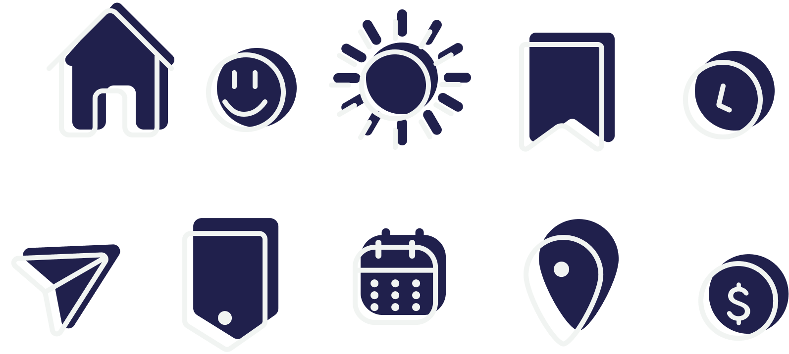
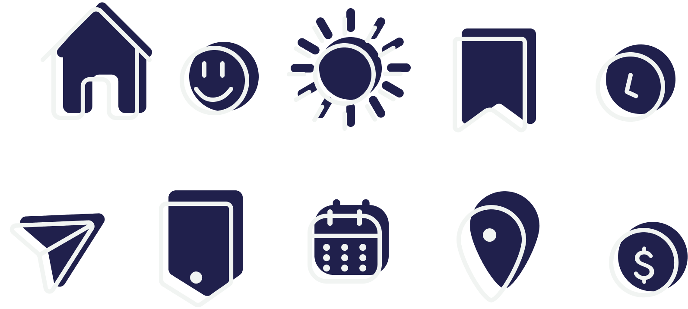

Sobre o Projeto
O projeto Feira da Pechincha foi criado em 2014 na sede da "Casa de Caridade" e trazida para a filial de Quixadá em 2015. tem o objetivo de coletar roupas, acessórios, calçados e utensílios em geral para realizar um bazar com esses objetos por um preço simbólico para as pessoas com eixo social fragilizado ou de baixa renda que necessitam de ajuda. A feira também tem como intuito proporcionar bons sentimentos nas pessoas, como o de poder comprar vários bens com custo mais baixo, já que, além dos valores espirituais da "Casa de Caridade", as pessoas nunca saem de lá apenas com o que compraram.

Vídeo conceitual
O vídeo conceitual ao lado tem como objetivo tanto introduzir a nova identidade e elementos da Feira da Pechincha como também divulgar o projeto social em si trazendo consigo animação e efeitos audio-visuais que transmitam valores e o que a marca deseja passar para seu público-alvo, alegria, amor, inclusão e acolhimento.
Doações e Doadores
O que é ser um doador ou voluntário?
Ser um doador ou voluntário é você disponibilizar itens ou serviços em pro de ajudar um projeto social ou algo que benecifie a sociedade em geral, ser um voluntário ou um doador pode te proporcionar experiências incríveis e gratificantes, estudos científicos apontam que ajudar outra pessoa é uma ação que aumenta os níveis de satisfação, melhora o humor, reduz o estresse e proporciona senso de propósito ao indivíduo. O ato de se doar para o outro também tem o poder de reduzir a fixação com os próprios problemas, então se junte a nós na Feira da Pechincha!
Como ser um doador?
Para se tornar um doador ou um voluntário do nosso projeto apenas entre em contato com a gente por meio das nossas redes sociais a baixo ou converse diretamente conosco na Casa de Caridade!


 
